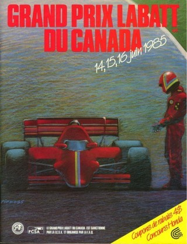

Michele Alboreto
Rosso 27

Victories
Michele didn't win as much as he deserved.
5 Victories in Formula 1, the European Formula 3 Championship,
and especially the 24 Hours of Le
Mans in 1997, were the Highlights of his Career
The best
year in Formula 1 was in the 1985 World Championship. When he was in the lead for most of the season, he had
to retire 4 times in the last 5 Races for Engine and Turbo failures
June 16, 1985-Canada Grand Prix-Gilles Villeneuve Circuit
Summary
The 1985 Canadian Grand Prix was a Formula One motor race held at Circuit Gilles Villeneuve in Montreal on 16 June 1985. It was the fifth race of the 1985 FIA Formula One World Championship. The 70-lap race was won by Michele Alboreto, driving a Ferrari, with teammate Stefan Johansson second and Alain Prost third in a McLaren-TAG. The win gave Alboreto the lead of the Drivers' Championship by five points from Prost and Elio de Angelis, who finished fifth in his Lotus-Renault having started from pole position, while Ferrari took the lead of the Constructors' Championship.
The race
At the start, de Angelis led away from Senna and Alboreto. Warwick made a fast start to run fourth, before suffering handling problems. On lap 6 Senna pitted with a turbo problem, losing five laps in the process. Alboreto then closed up to de Angelis, before passing him for the lead on lap 13. In mid-race, Johansson also passed de Angelis to set up a Ferrari 1-2, while Lauda retired with an engine failure. Alboreto eventually took the chequered flag 1.9 seconds ahead of Johansson, with Prost and Rosberg moving into third and fourth respectively in the closing laps, and de Angelis having to settle for fifth, ahead of Mansell.
.png)
70 laps, 308.700 km (191.817 mi)
Podium
1st Michele Alboreto-(Ferrari)
2st Stefan Johansonn-(Ferrari)
3rd Alain Prost-(McLaren-TAG)
Pole position
Elio de Angelis-(Lotus-Renault) Time 1:24.567
Fastest lap
Ayrton Senna-(Lotus-Renault) Time: 1:27.445 on lap 45


{kind=link}
{kind=link}
{kind=link}
{kind=link}